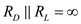

The expression for the voltage gain of a CS amplifier is,
In discrete-circuit amplifiers is smaller than  .
.
Determine the upper limit of voltage gain by assuming .
As is in parallel with  and , the resistance of is neglected because of high resistance.
and , the resistance of is neglected because of high resistance.
The expression for the voltage gain of a CS amplifier is,
…… (1)
The expression for trans-conductance of the amplifier is,
Substitute for  in equation (1).
in equation (1).
…… (2)
 is,
is, 
 in equation (2).
in equation (2). is .
is .